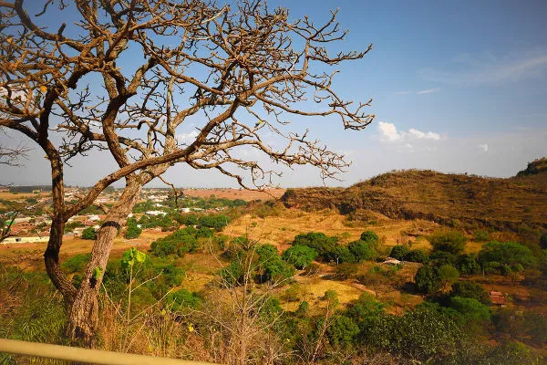
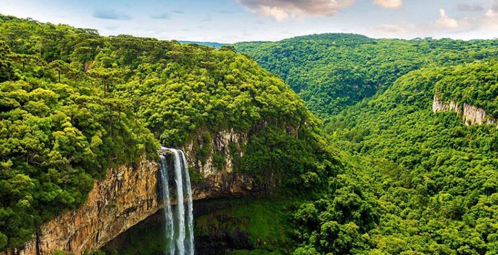
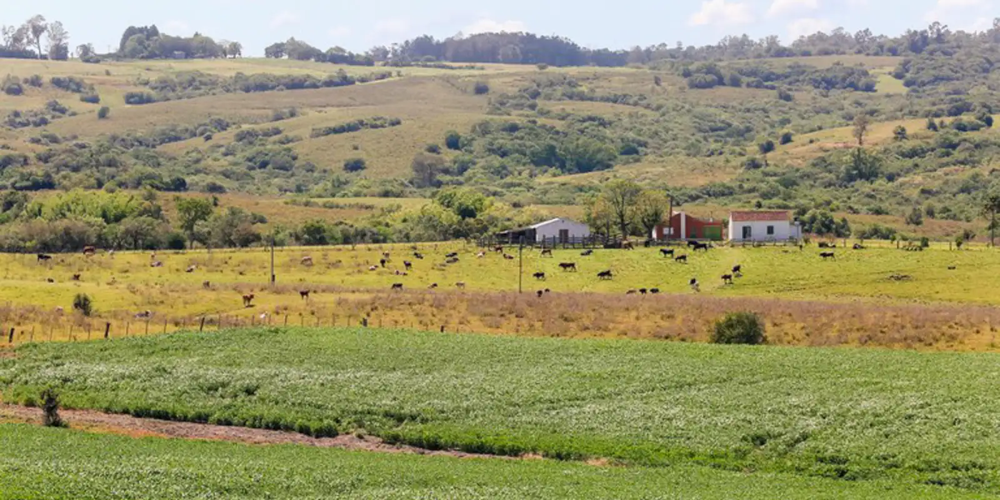
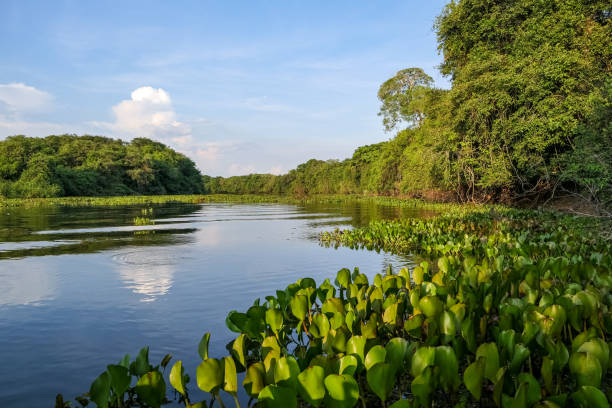

Biomas do Brasil
Os biomas do Brasil são formações vegetais com características próprias, influenciadas pelo clima, solo e relevo. Os principais biomas brasileiros são:
Amazônia

Maior bioma do Brasil, com floresta tropical e grande biodiversidade.
Cerrado
Segundo maior bioma, caracterizado pelo clima sazonal e vegetação adaptada ao fogo.
Mata Atlântica
Bioma de grande biodiversidade, mas muito devastado pela urbanização.
Caatinga

Vegetação típica do semiárido, com clima quente e seco.
Pampa
Encontrado no sul do Brasil, com campos naturais e clima temperado.
Pantanal
Maior planície alagável do mundo, com grande variedade de fauna.